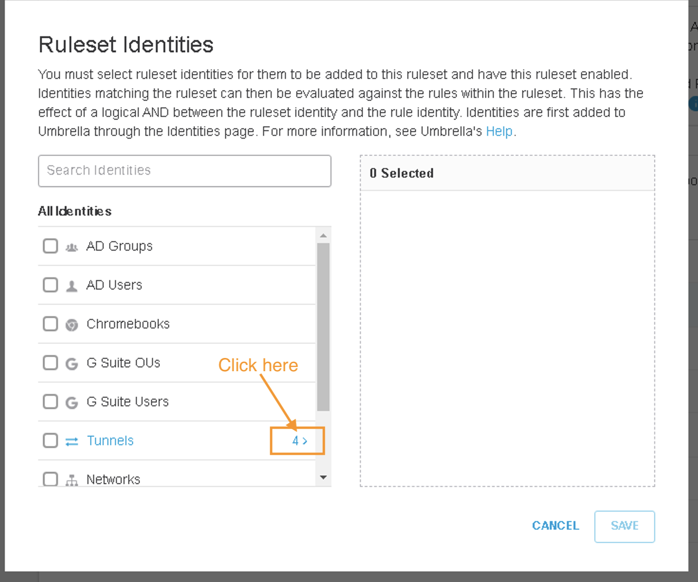

Task 8 - Umbrella Regional Policies
For Web Proxy, block all social media networking contenxt and use custom-list to few other block websites
Step 1 - Umbrella Web Policy
-
Configure an Umbrella Web Policy to block social media websites.
- Go to Policies>Management>Web Policy and click Add

- Click Add Rule. Give the rule a Name and click Add Identity
-
Select Inherit Ruleset Identities, then Apply
-
Click Add Destination
- Click Application Settings, then search for Social Networkingk. Select Social Networking, then Apply

- Click Save
- Click three dots and then Enable Rule
- Confirm by clicking Update

- Go to Policies>Management>Web Policy and click Add
-
Under Ruleset Settings, go to the Ruleset Identities section and click Edit
- Click on number 4 and then select Tunnel for Site100, click Save 
- Go to the HTTPS Inspection section and click Edit

- Select Enable HTTPS Inspection, then Save

- Scroll down and click Close

Step 2 - Create Customs-list Web Policy
- On Umbrella dashboard, navigate to Policy>Policy Component>Destination lists, click Add on the top right corner

- List Name : Custom-Filter
- Destination List type : Web Proxy
- Destination : www.cnn.com
- Click Add

- Click Save

- Navigate to Policies>Management>Web Proxy and expand on RuleSet2

- Click three dot and then click Edit
- Click on Edit Destinations and then on Destiniation Lists

- Click on Customer-Filter and then on Apply
- Click on Save and Close the RuleSet2